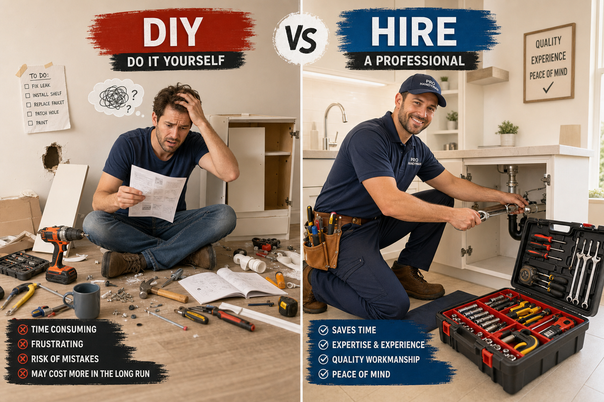

With the cost of professional services continuing to rise, it's tempting to tackle home repairs yourself. Some jobs genuinely are DIY-friendly. Others, however, can create more problems than they solve — or create safety and liability issues that far outweigh any cost savings. Here's a practical framework for making the right call.
DIY-Friendly Repairs (Generally Safe to Self-Perform)
Replacing interior switch covers and outlet covers (power off first), minor caulking around sinks and tubs, replacing a toilet flapper or fill valve, changing lightbulbs including recessed fixtures, applying weatherstripping to doors, minor touch-up painting, tightening loose cabinet hinges, and cleaning gutters on single-story homes are all reasonable DIY tasks for capable homeowners. The common thread: low skill requirement, low cost of failure, and no permitting requirement.
The "Middle Ground" — DIY If You're Capable
These jobs are doable but require research, basic tool skills, and patience: drywall patching (small to medium holes), painting full rooms, replacing a faucet or showerhead, installing ceiling fans (if wiring exists), assembling and installing pre-hung interior doors, and replacing deck boards. Mistakes here are recoverable — a bad paint job gets repainted, a leaky faucet connection gets re-tightened. If you're methodical and patient, these are reasonable DIY projects.
Leave These to Professionals
Electrical work beyond switch and outlet replacement (including panel work, new circuit runs, and outdoor wiring), plumbing beyond fixture replacement (pipe work, water heater replacement), structural work including load-bearing wall removal, roofing, HVAC installation or repair, and any work requiring a permit. In Hawaii, unpermitted work — particularly electrical and plumbing — can create serious title issues when you sell and invalidate your homeowner's insurance for related claims.
The True Cost of DIY Failures
Consider the realistic failure scenarios: a DIY drywall patch that matches texture perfectly costs you nothing but time; one that looks terrible costs you the professional repair fee anyway plus the time already spent. A DIY electrical connection that's done incorrectly can cause a house fire. The question isn't just "can I do this?" but "what's the worst realistic outcome if I do it wrong?"
Hawaii-Specific Considerations
On an island, materials cost more and wait times for specialized contractors are longer. This makes proactive maintenance — catching small issues before they require specialized trades — even more valuable. A $150 caulking job today prevents a $3,000 water damage remediation next rainy season. Fix-It Hawaii exists for exactly this middle tier: jobs too small for a general contractor but requiring more skill and reliability than typical DIY.
When in doubt, a free estimate costs you nothing. Call us — we'll give you an honest assessment of whether the job warrants professional attention or if it's genuinely DIY-friendly with some guidance.